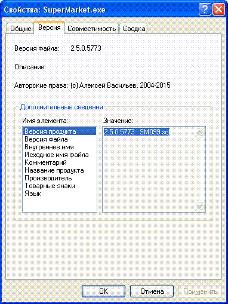
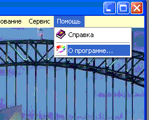
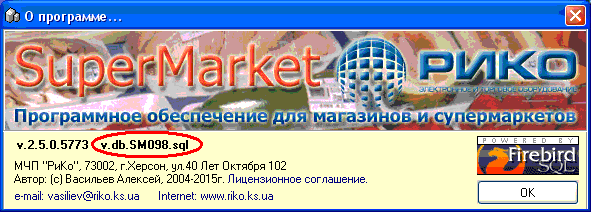
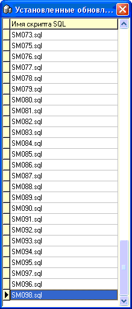
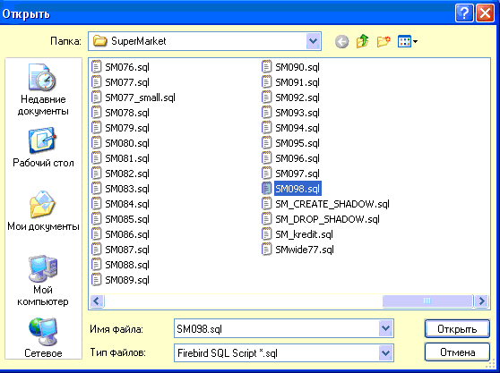
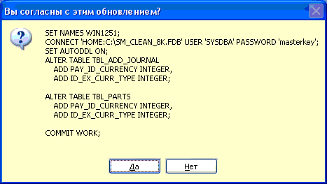

Данная возможность доступна только администраторам и позволяет отследить в отладочном окне выполняемые программой SQL-запросы к базе данных (при условии установки соответствующей опции на вкладке "Общие" в форме настроек программы), а также загрузить и выполнить обновления к базе данных.
Что это такое и зачем это
нужно? Программное обеспечение SuperMarket постоянно совершенствуется,
добавляются новые функции. Кроме обновления самого файла SuperMarket.exe
необходимо обновлять до соответствующего уровня и базу данных. Они должны быть
строго одинаковыми!
Как посмотреть для какой версии базы данных создан exe-файл: щелкнуть на нем правой кнопкой мыши, выбрать Свойства, перейти на вкладку Версия и внизу выбрать Версия Продукта (или Комментарий):

Как посмотреть какая версия базы данных или номер последнего установленного обновления: в программе зайти в меню "О программе" и в появившемся окне найти строку v.db.SMxxx.sql, где ххх - и есть необходимая цифра. Если щелкнуть по надписи, то откроется список всех установленных обновлений.


Итак, вернемся к консоли SQL. Как устанавливать обновления ? Для установки обновления выберите соответствующий пункт в меню формы:

Выберите нужный файл с расширением SQL вида SMxxx.sql, где ххх - номер обновления.

Далее в виде инструкции языка SQL на экран будет выведено содержимое обновления. Нажмите "Да" или Enter на клавиатуре, если обновление большое и вы не видите кнопку "Да".

При обновлении базы данных в окне выводится информация о ходе установки. При успешном обновлении базы данных на каждую успешно проведенную команду выдается сообщение "Команда SQL успешно завершена, после выполнения всех команд перезапустите программу!", и наоборот, при неуспешном обновлении появляется сообщение "ERROR".
 Устанавливайте обновления строго в порядке
возрастания их номера. Последние обновления можно получить у производителя
программного обеспечения. Обновление можно и нужно ставить лишь на одном
компьютере сети, т.к. база данных сетевая и все пользователи работают с общей
базой. Обычно их выполняют на компьютере-сервере, т.е. на том
где находится сама база данных, а затем меняют exe-файл
SuperMarket.exe на всех компьютерах на новый, идущий с данным обновлением
базы данных.
Устанавливайте обновления строго в порядке
возрастания их номера. Последние обновления можно получить у производителя
программного обеспечения. Обновление можно и нужно ставить лишь на одном
компьютере сети, т.к. база данных сетевая и все пользователи работают с общей
базой. Обычно их выполняют на компьютере-сервере, т.е. на том
где находится сама база данных, а затем меняют exe-файл
SuperMarket.exe на всех компьютерах на новый, идущий с данным обновлением
базы данных.
~~~~~~~~~~~~~~~~~~~~~~~~~~~~~~~~~~~~~~~~~~~~~~~~~~~~~~~~~~~~~~~~~~~~~
ВНИМАНИЕ !!! Для работающих по
репликационной схеме, перед установкой обновления на каждую
из точек,
используйте такую последовательность:
0. Все точки должны быть полностью
реплицированы/синхронизированы в
установленном порядке.
1.
Выполните скрипт DeleteReplication.sql
2. Перезапустите программу
3.
Установите скрипты обновления базы данных SM0хх.sql
4. Перезапустите
программу
5. Выполните скрипт ExecReplicationProc.sql для основной базы
или
ExecReplicationProc_.sql, где _ это номер торговой точки
на которой
устанавливается обновление
6. Перезапустите
программу
~~~~~~~~~~~~~~~~~~~~~~~~~~~~~~~~~~~~~~~~~~~~~~~~~~~~~~~~~~~~~~~~~~~~~